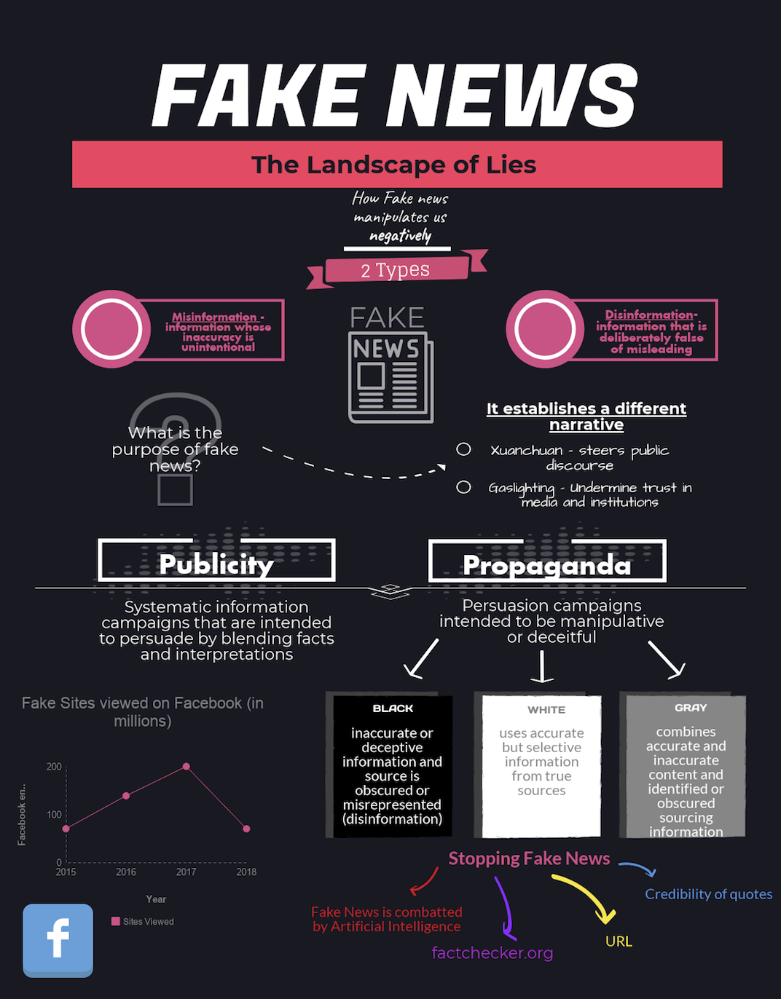
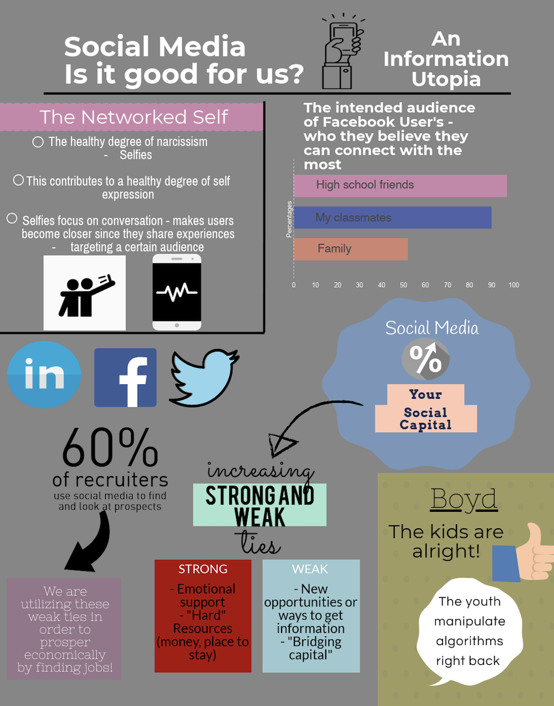

My Resume

My Projects
My Projects
Above is my first infographic that I made my sophomore here. This was made for SI 110 which was an introductory course to the School of Information. I focused on the topic of Fake News and how people can identify and stop it.

This is the second infographic that I made for that course. This infographic was centered around the pros and cons of social media. There are many viewpoints on whether social media has been beneficial to millenials or if it has hurt us.